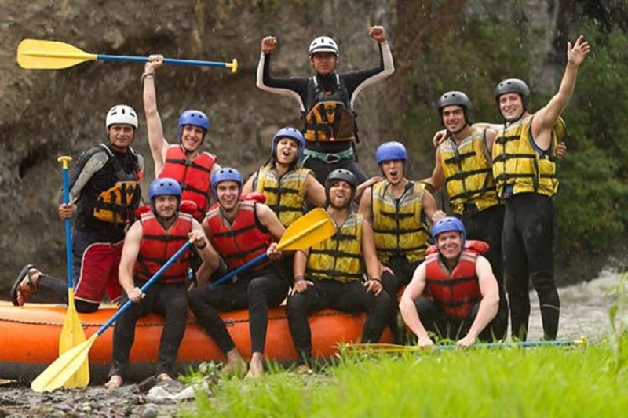
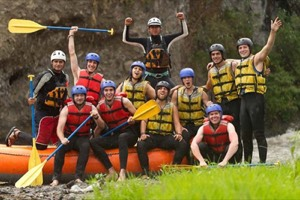

Na White Water Rafting, nossa missão é proporcionar experiências inesquecíveis de adrenalina e aventura. Acreditamos que cada descida é uma oportunidade de criar memórias extraordinárias e fortalecer laços com família e amigos.

White Water Rafting
História
Fundada em 2010, a White Water Rafting começou como um sonho de entusiastas que desejavam compartilhar a emoção das corredeiras com outras pessoas. Ao longo dos anos, crescemos e nos tornamos uma das principais operadoras de rafting da região.

Mantemos sempre nosso compromisso com a segurança, equipamentos de ponta e a sustentabilidade ambiental. Nossos guias são treinados para garantir que desde iniciantes até aventureiros experientes aproveitem cada segundo nas águas.
A aventura está te esperando!